|
Inicio
Bibliografía
Noticias
Hangar
Actividades
Cursos
Comisión
Fotos
Videos
Ubicación
Contáctenos
Links
|
|
Manual del Vuelo a Vela
Wolf Hirth - 1942
El vuelo
por Heinz Kensche
1ª Sección:
Aire y resistencia del aire
Para poder
explicar las circunstancias del vuelo es preciso tratar primeramente de las propiedades
del medio en el que el vuelo tiene efecto, es decir, de las propiedades del aire.
La capa de aire que envuelve a la Tierra tiene un espesor
de unos 250 km. Está compuesta, como ya se sabe, de oxígeno, nitrógeno y pequeñas
cantidades de otros gases (Véase también el capitulo « Meteorología para pilotos de
velero »). A causa
de la acción de la gravedad de la Tierra, el aire superior se apoya sobre el aire de las
capas inferiores y éste, a su vez, sobre la superficie terrestre. Una columna de aire
normal a esa superficie de un cm.2 de sección y de la altura
de la atmósfera ejerce sobre su base, en las circunstancias de temperatura y estado del
tiempo normales, una presión de 1,033 kg., valor numérico que se llama presión
atmosférica y que se mide en mm. de mercurio o en altura de H2O, es decir,
está en equilibrio con la columna de aire una altura de agua de 10,33 m. Cerca del suelo
el aire pesa en condiciones normales a razón de 1,25 kg. por m.3, valor que se
llama peso específico o densidad del aire. Solamente para completar estas ideas
preliminares se citarán aquí los hechos conocidos de que el aire, como los demás gases,
es compresible y sigue las leyes de Boyle-Mariotte y de Gay-Lussac cuando varían su
temperatura y su presión, como asimismo varía entonces su densidad y que, por fin, al
aumentar la altura la presión disminuye según la curva barométrica. En esencia, resulta
de estas propiedades que el aire es un cuerpo que tiene peso, dotado de masa y que, por lo
tanto, cuando está en reposo, ejerce una cierta acción sobre su base de apoyo.
La teoría del aire en reposo, cuyos rasgos generales se
han citado, es lo que se llama aerostática.
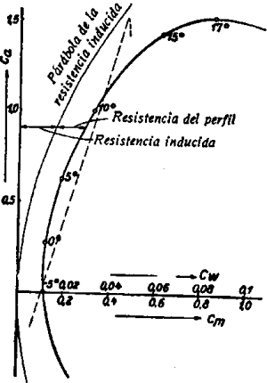 Fig. 9. Polar de un ala
La
aerodinámica es la teoría del aire en movimiento y algunas de sus leyes se explicarán
aquí, por ser necesarias para la buena comprensión de los fenómenos que han de
analizarse. Se puede decir que el fundador de la aerodinámica tal como se entiende hoy
fue Otto Lilienthal, el primer hombre que consiguió volar. Prescindiendo de las
primitivas investigaciones de Leonardo da Vinci y de Berblinger, el « sastre de Ulm »,
cuyas investigaciones eran más bien de carácter científico, puede decirse que
Lilienthal fue el primero que buscó la explicación científica del vuelo práctico y que
desarrolló su teoría aerodinámica de un modo sistemático, experimentando con una
instalación ideada por él, el aeródromo circular, la sustentación y la resistencia del
aire de superficies móviles en él. Por medio de la comparación descubrió, por ejemplo,
la superioridad de las superficies arqueadas respecto a las planas, en lo concerniente a
obtener sustentación. Él inventó también el procedimiento de representar los
coeficientes aerodinámicos de un perfil de ala por medio del diagrama polar, cuyo modo de
representación, en esencia, se ha conservado hasta hoy (fig. 9).
Características de vuelo
El
elemento más esencial del avión es el ala, cuya forma y modo de construcción son
decisivos para las características de un avión. La historia de la evolución de la forma
del ala está íntimamente ligada con la del progreso en los conocimientos sobre
aerodinámica. Los primeros ensayos aerodinámicos dieron por resultado que la mayor
sustentación y la mínima resistencia se consiguen con un ala del menor espesor posible y
de perfil curvo, y, de consiguiente, los primeros aviones tenían alas arqueadas de
perfiles delgados, las cuales para llegar a tener la suficiente resistencia se disponían
atirantadas y arriostradas entre sí y con el fuselaje, modo de construcción que, con el
empleo de perfiles delgados, se sostuvo hasta los tiempos de la guerra mundial
(1914-1918). Estos elementos de atirantamiento, como riostras, hilos y los muchos nudos de
empalme que para ellos eran necesarios y que no podían ser utilizados directamente en
producir sustentación, producían en cambio mucha resistencia perjudicial, de manera que
se perdieron las buenas características de las alas.
Se trató, pues, de limitar todo lo posible el empleo de
elementos que dieran lugar a resistencia perjudicial, y el profesor Junkers fue el primero
en darse cuenta de que se había de seguir otro camino en la construcción de aviones.
Reconoció que el empleo de perfiles de ala gruesos ofrecía muchas ventajas, pues
permitía ocultar dentro del ala muchos elementos de la construcción que sólo producían
resistencia perjudicial. El aumento de resistencia que el perfil grueso del ala pudiera
producir se compensaba de sobra con la supresión de cables y riostras, y de este modo
nació en el curso mismo de la guerra el ala volada.
Un camino análogo de evolución siguieron otros elementos
constructivos del avión, y basta para ello hacer una comparación entre el fuselaje de
los primeros Blériot y Farman, cuya estructura de celosía iba libremente en la corriente
de aire, dando lugar con ello a gran resistencia al avance, y el fuselaje de un avión
moderno cuya lisa superficie ofrece la mínima superficie posible de ataque al aire
circundante. El que hoy se empleen para la enseñanza del vuelo sin motor aparatos con
fuselaje de celosía y, por lo tanto, con las características de los primitivos aviones,
no quiere decir que los modernos aparatos no signifiquen un progreso: es que ese método
de enseñanza, con todas las circunstancias que son su consecuencia, se emplea
sencillamente por la razón de su economía; a lo que se añade el que en los aparatos de
escuela no se desean características demasiado buenas (buen ángulo de planeo), porque un
ángulo de planeo demasiado bueno trae como consecuencia demasiada atención en el alumno
para dominar la técnica del aterrizaje, especialmente cuando ha de hacerlo en sitio
prefijado.
Para poder comprender la evolución de los aparatos de
vuelo sin motor es necesario que antes nos ocupemos algo de la aerodinámica y, en primer
lugar, de la teoría de la sustentación del ala, propiamente dicha. Como ya se dijo al
principio, la aerodinámica dispone de un excelente medio para leer directamente los
coeficientes de un perfil, y ese medio es el diagrama polar de Lilienthal. Los
coeficientes, Ca (de sustentación) y Cw (de
resistencia al avance) en unión de la presión del aire y una magnitud conocida del ala,
el área de la superficie de sustentación, permiten calcular inmediatamente la
sustentación y la resistencia al avance de un ala bajo un determinado ángulo de ataque.
Se tiene:
A = Ca . q . F
es decir:
sustentación igual al coeficiente por la presión y por la superficie.
W =
Cw . q .
F
o sea:
resistencia igual al coeficiente respectivo por la presión por la superficie. Si se
observa atentamente el diagrama, se ve que se puede hallar, con cualquier ángulo de
ataque del ala, su coeficiente de planeo dividiendo el coeficiente de resistencia por el
de sustentación. Es decir, coeficiente de planeo, tg
. j = Cw / Ca.
En el diagrama polar se ve, además de la línea más gruesa, otra segunda más fina,
y para comprender la significación de esta curva hay que saber que la resistencia de un
ala se compone de dos partes: la resistencia inducida y la resistencia del perfil. Ludwig
Prandtl, director del Instituto Aerodinámico de Gotinga, ha hecho ver la existencia e
importancia de la resistencia inducida de un ala y la ha explicado completamente en su
teoría del ala sustentadora (Teoría del ala de envergadura finita), y puesto que esta
teoría es de gran importancia en la evolución del velero, la expondremos aquí, aunque
sólo sea brevemente.
Si un ala es soplada por una corriente de aire o, lo que
es igual, el ala se mueve respecto a un aire en reposo, se produce una sustentación que
depende de su sección transversal y del ángulo de ataque. La corriente de aire que
produce la sustentación del ala se puede imaginar descompuesta en una corriente
irrotacional estacionaria y una corriente de circulación superpuesta a la primera. La
adición de las dos corrientes que deben suponerse separadas por el perfil del ala, una
sobre la cara dorsal y otra en la cara inferior del ala, da lugar a velocidades que
respecto a la velocidad media primitiva representan, la primera una aceleración y la
segunda un retardo en el movimiento de las partículas de aire y a consecuencia de ello se
originan en la cara superior una aspiración dinámica y en la cara inferior una
sobrepresión de igual origen. La circulación existente alrededor del perfil del ala no
cesa bruscamente en los márgenes de ésta, sino que se prolonga algo más allá, siendo
desviada hacia atrás en ambos márgenes por la acción del viento relativo de la marcha.
Los torbellinos desprendidos de este modo constituyen los llamados torbellinos marginales
y son los que unidos a la circulación imaginada en el ala, forman el llamado torbellino
en herradura, a causa de su forma. Según enseñan las leyes de la aerodinámica, una
formación de torbellino equivale a una resistencia y la que, en la cuestión de que se
trata, nace a consecuencia de los torbellinos desprendidos en los márgenes del ala se
llama resistencia marginal o resistencia inducida. La circulación citada antes, que da
lugar a la sustentación, no está repartida uniformemente a lo largo de toda la
envergadura, sino que, a consecuencia de la corriente que se forma en los márgenes debida
a la diferencia de presión entre las caras superior e inferior del ala, se establece una
circulación hacia el exterior de cada semiala que equivale a una disminución de la
sustentación. Resulta así que la repartición de la sustentación en alas de planta
rectangular, trapecial o elíptica se asemeja más o menos a una semielipse. Ludwig
Prandtl ha reconocido el hecho de que la energía cinética de las masas descendentes, que
equivale a una pérdida, es igual al trabajo por segundo de la resistencia inducida, y
apoyándose en estas deducciones y en la suposición de una repartición de la
sustentación exactamente elíptica, ha establecido el valor del coeficiente de
resistencia inducida igual a:
Cwi = (Ca2 / p ) . (F / b2)
De este
valor se deduce que la resistencia inducida crece con el cuadrado de la sustentación y
disminuye con el cuadrado de la envergadura, viéndose así que una buena característica
exige una gran envergadura.
El valor F / b2, o
simplificando, t / b es el
inverso del alargamiento o esbeltez del ala. La forma de la dependencia entre la
resistencia inducida y la sustentación que es de carácter cuadrático hace que la curva
fina del diagrama polar antes citada sea una parábola. Se ve, por otra parte, que esta
curva es siempre muy pendiente y tanto más cuanto la relación t / b sea
más pequeña, o, lo que es igual, mayor el alargamiento. De todo lo dicho se deduce con
toda claridad la conveniencia de que un ala de velero tenga un buen alargamiento. En los
aviones ordinarios con motor el alargamiento no tiene importancia tan grande, porque
disponiéndose de la gran potencia del motor y por la gran velocidad de vuelo que se
quiere obtener, el vuelo es posible aun con pequeños coeficientes de sustentación, y,
dada la dependencia cuadrática citada entre la resistencia inducida y la sustentación,
la primera se mantiene dentro de limites restringidos y además su contribución a la
resistencia total, dadas las demás circunstancias, es pequeña.
En el vuelo a vela, en el que se tiene por objetivo
conseguir una pequeña velocidad de descenso con gran coeficiente de sustentación, es de
mucha importancia conseguir una disminución de la resistencia inducida mediante el
aumento consiguiente de envergadura, puesto que esa resistencia constituye la mayor parte
de la resistencia total.
La resistencia del perfil, que es la parte comprendida en
el diagrama entre la parábola de la resistencia inducida y la polar, se compone de la
resistencia de forma y de otra de fricción, la cual depende de la fricción interna o
viscosidad del aire y es producida por la formación de la llamada capa superficial,
constituida por una delgada película de fluido adherida al cuerpo.
Numéricamente, la resistencia de forma representa la
parte menor de la resistencia del ala; por lo tanto, en la construcción de veleros no es
esencial la cuestión de elección de perfil, desde el punto de vista de la resistencia,
ya que se atiende a otras circunstancias para conseguir las buenas características
deseadas, de las cuales se hablará después. Es más importante, en la construcción de
aparatos, atender a la resistencia de fricción, que debe reducirse haciendo que la capa
superficial sea de espesor mínimo, y asimismo a la resistencia inducida, disminuyéndola
lo posible por un buen alargamiento. Naturalmente que el alargamiento no puede escogerse a
voluntad haciéndole indefinidamente grande, puesto que a partir de un cierto límite
resulta inadmisible el peso del avión, a consecuencia de la gran envergadura necesaria,
de modo que por este camino se llegaría a velocidades de descenso ya de gran valor, que
darían lugar a que las características no fueran las convenientes, a pesar del buen
coeficiente de planeo. Lo mejor es tratar de llegar a una resistencia inducida lo menor
posible, después de fijado el alargamiento, atendiendo también a que la distribución de
sustentación, a lo largo del ala, siga dentro de la ley elíptica mientras se mantenga el
ángulo de ataque en los límites normales de vuelo, lo cual es posible, según han
demostrado por el cálculo Glauert, Birnbaum, Lotz, y especialmente Lippisch; pero veremos
también que para conseguir ese resultado se debe renunciar a otras exigencias de
importancia.
Para hacer ver con más claridad la importancia de la
resistencia inducida se recordará lo siguiente: los coeficientes aerodinámicos de un
perfil de ala se obtienen en los ensayos hechos en el túnel de un Instituto
aerodinámico, de los que el más importante es el del establecimiento de Gotinga, el cual
ha publicado los resultados de las mediciones de perfiles en los « cuadernos de Gotinga
», números 1 a 4, los cuales serán seguramente conocidos de gran parte de los lectores.
Los modelos de alas ensayados en el túnel aerodinámico de Gotinga tienen siempre el
alargamiento de 5 : 1 y en los diagramas resultantes de los ensayos aparecen las polares
con la parábola de resistencia inducida a base de ese alargamiento. Si los diagramas
citados se transforman, para casos de mejores alargamientos, empleando la fórmula dada
para la resistencia inducida, se verá que las nuevas parábolas halladas son mucho más
pendientes, lo que quiere decir que, con los grandes valores de los coeficientes de
sustentación con los que principalmente se vuela en velero, la resistencia total del ala
se ha hecho más pequeña.
Para completar lo expuesto y para extender lo dicho a
otras publicaciones que contienen diagramas de perfiles, conviene decir que en otros
Institutos, y naturalmente con arreglo a la instalación y dimensiones de los túneles de
que disponen, pueden hacerse los ensayos con otros alargamientos y obtener los diagramas
polares para esos otros valores (Hay que advertir que en el texto original, en lugar del
alargamiento, figura el inverso de su valor, pero en España se acostumbra a razonar sobre
el alargamiento. Lo mismo puede decirse sobre los coeficientes aerodinámicos, que se
emplean los métricos, en función, no de la presión del aire, sino del cuadrado de la
velocidad; pero los resultados son iguales en cuanto a su influencia en el vuelo; estos
coeficientes métricos se usan también en Francia y en Inglaterra, y en los Estados
Unidos se usan los llamados absolutos. - N. del T.). Por ejemplo, los americanos
hacen los ensayos sobre alas de envergadura finita ; pero luego transforman los resultados
para ala ilimitada o envergadura infinita, prescindiendo así de la parábola de
resistencia inducida, representando sólo el diagrama la resistencia del perfil (Lo mismo
se hace en España. Conviene decir que, como se ve en la figura 9, la parábola inducida
es casi paralela a la polar, principalmente en los pequeños ángulos de ataque: si se
transporta hacia la derecha tal parábola hasta que coincida con la polar en el punto que
corta al eje horizontal, se ve que casi toda la parábola coincide con la polar y sólo en
los ángulos de ataque grandes se separa de ella: la distancia horizontal entre ambas
curvas así situadas representa la resistencia de forma del perfil y la parte constante
del intervalo entre ambas curvas, en su posición normal, es decir, lo que se trasladó la
primera hacia la derecha, representa el valor de la parte de resistencia debida a la
fricción. - N. del T.). Este método conviene para poder comparar las propiedades
dependientes sólo del perfil y para simplificar la transformación de la polar al caso
del alargamiento fijado en el proyecto de un avión. Lo expuesto es sólo un resumen de
los fenómenos que ocurren, hecho con objeto de facilitar al lector que no tenga
preparación suficiente la comprensión de las explicaciones que siguen (Se encontrará
una explicación más completa y exacta sobre los fundamentos teóricos expuestos, en la
literatura siguiente: 1. Cuadernos de Gotinga 1 a 4; 2. Fundamentos del vuelo, de
Pfister y Porger, cuadernos 4 y 5 de la serie Volckmann. En español, en la obra El hombre
vuela Editorial Labor. - N. del T.).
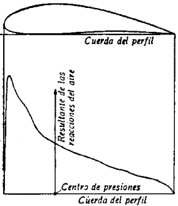 Todavía hay que decir algo más
sobre el diagrama polar, haciendo ver la importancia de la segunda curva del diagrama en
la zona de los ángulos de ataque normales.
Fig. 10. Distribución de fuerzas con relación
a la profundidad del ala, en el caso de un ángulo de ataque próximo al de la máxima
sustentación
La
fuerza de sustentación que actúa sobre el ala se puede imaginar formada, en el caso de
ángulos de ataque positivos, por los 2/3 de su valor como consecuencia de aspiración
sobre la cara dorsal del ala y el 1/3 restante, como sobrepresión en la cara inferior,
aunque para lo que sigue es indiferente que se trate de efectos de aspiración o de
sobrepresión. Imaginamos, desde luego, el perfil proyectado sobre su cuerda y que las
fuerzas actúan concentradas, con su valor total sobre esta proyección. Entonces se ve,
figura 10, que las fuerzas son notablemente mayores hacia el lado del borde de ataque que
hacia el borde de salida. Si se suponen 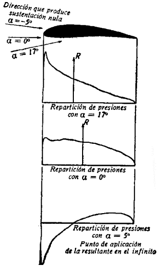 compuestas todas estas fuerzas en una resultante, ésta deberá
pasar por el centro de gravedad de la superficie de
distribución de fuerzas, puesto que debe tener, respecto a cualquier punto de la
profundidad del perfil, el mismo momento que la totalidad de las fuerzas parciales; el
punto en cuestión, por donde pasa esa resultante, se llama centro de presiones. Para
comprender la expresión frecuentemente empleada de que « el centro de presiones se
desplaza », hay que decir que la posición del mismo es diferente para cada ángulo de
ataque (fig. 11), y así se ve que la presión hacia el borde anterior del perfil es tanto
mayor, respecto a la presión en la zona del borde salida, cuanto mayor es el ángulo de
ataque.
Fig. 11. Variación de la distribución de
presiones en los diferentes ángulos de ataque
Se ve que
en el ángulo de ataque en que la sustentación se anula, las presiones en la zona del
borde de ataque son hasta negativas, es decir, la sustentación total es nula, pues se
destruyen las reacciones del aire positivas de la zona posterior con las negativas de la
anterior, pero ambas resultantes parciales dan lugar a un momento. Este resultado se
expresa matemáticamente diciendo que la resultante total está aplicada a distancia
infinita, y para los valores negativos, que a partir de esa posición empieza a tomar,
sigue, fuera del perfil, a distancias muy grandes hacia la región anterior.
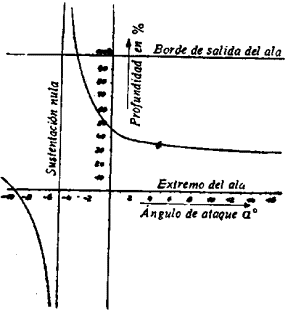
Fig.
12. Variación de posición del centro de presiones cuando varía el ángulo de ataque
En la
figura 12 está representada gráficamente la variación de posición del centro de
presiones, viéndose que dentro de la zona normal de vuelo, al crecer el ángulo de
ataque, el centro de presiones avanza y al disminuir ese ángulo el citado centro
retrocede, lo que tendrá consecuencias sobre la estabilidad. Los perfiles con estas
propiedades, que son los más empleados en la construcción de veleros, se llaman «
inestables ». Si se supone el perfil capaz de girar alrededor de un punto, que puede ser
el de aplicación de la sustentación en su valor normal, donde en general está también
el centro de gravedad del avión, resulta que las variaciones del ángulo de ataque dan
lugar a nuevas posiciones de la reacción del aire, que obran aumentando esa variación en
el mismo sentido: si, por ejemplo, aumenta el ángulo de ataque, el centro de presiones
avanza y la reacción del aire tiene un momento respecto a la posición anterior, bajo la
cual debe estar el centro de gravedad, aumentándose más todavía, por su efecto, el
ángulo de ataque.
Si el ángulo de ataque disminuye, el centro de presiones
retrocede y la reacción del aire tiene un momento que disminuye aun más ese ángulo. De
las figuras anteriores se deduce que la reacción del aire tiene un momento respecto al
borde de ataque, por ejemplo, cuyo valor puede expresarse por:
M
= A . s
M = Ca . q
. F . s
Poniendo
de manifiesto, en el segundo miembro, el valor de t, se puede escribir:
M = Ca . q .
F .
t . (s / t)
Los
valores s y Ca que dependen del ángulo de ataque, se
pueden agrupar, juntamente con el valor t de la profundidad del ala supuesto
constante, dando lugar al coeficiente Cm
de valor:
Cm
= Ca . (s
/ t)
Con lo que
el momento vale, por último:
M = Cm . q . F . t
El
coeficiente Cm se llama
coeficiente de momento y se lleva al diagrama en línea de trazos.
El cálculo del momento con ayuda del coeficiente de ese
nombre tiene el objeto, como fácilmente se comprende, de poder calcular también el valor
del momento en la posición de sustentación nula, que es, como se deduce de la polar, el
que corresponde al punto en donde corta la curva de momentos a la ordenada de la abscisa
de sustentación nula.
La magnitud de la variación de posición del centro de
presiones de un perfil puede deducirse de la curva de los valores de Cm o curva de momentos, dibujada en el diagrama, viéndose que la
pendiente de esta curva, es decir, la variación del valor de Cm en
relación con los valores de Ca es aproximadamente la misma en todos los perfiles. La
influencia de la curva de momentos sobre los desplazamientos del centro de presiones
resulta así dependiente sólo de su posición respecto a la de sustentación nula, y un
análisis más detenido hace ver que esos desplazamientos son tanto mayores cuanto mayor
sea el valor de Cm en
el referido punto de valor nulo de la sustentación o, con otras palabras: el
desplazamiento del centro de presiones, para igual variación del coeficiente de
sustentación, es tanto mayor cuanto mayor sea el valor de Cm0 designando de este modo el valor de Cm para
la sustentación nula, y ese desplazamiento es tanto menor cuanto menor sea Cm0. Si
la curva de momentos pasa por el origen de coordenadas, o sea si es Cm0
= 0,
el centro de presiones no se mueve, sino que permanece en la misma posición, y en este
caso se dice que el perfil es un « perfil de centro de presiones fijo ». Si la curva de
momentos pasa a la izquierda del centro de coordenadas, o sea el valor de Cm0 es
negativo, otra vez se mueve el centro de presiones, pero esta vez en sentido contrario:
con ángulos de ataque crecientes retrocede, y con ángulos decrecientes avanza; en este
caso se dice que el perfil es « estable por sí mismo », es decir, si el perfil tiene
tendencia a aumentar el ángulo de ataque, esta tendencia es contrarrestada por el
retroceso de la reacción del aire que trata de volver el perfil a su posición anterior.
Con esto queda bien patente la importancia de ambas curvas
del diagrama en la zona de los valores normales del coeficiente de sustentación.
Si se sigue el curso de la curva llena Ca hasta
los grandes valores del ángulo de ataque, se ve que a partir de un cierto valor del
coeficiente de sustentación se presenta un gran aumento del coeficiente de resistencia al
avance, hasta que la curva llega al máximo de Ca, a partir del cual, siguiendo el crecimiento del ángulo de
ataque, la sustentación disminuye.
La significación de esta propiedad es la siguiente: La
corriente de aire que se lanza sobre el perfil y le rodea es desviada; como ya se ha
explicado antes, a lo largo de la superficie del perfil y lanzada hacia abajo, de modo que
cuanto más inclinado se ponga el perfil respecto a la dirección de la corriente de aire,
más enérgica es la desviación que debe sufrir en la cara superior del perfil. La
sobrepresión en la cara inferior va haciéndose cada vez mayor, hasta que alcanza un
valor con el que la corriente empieza a desprenderse de la cara dorsal del ala, y de tal
modo, que en la mayor parte de los perfiles empleados en el vuelo a vela el
desprendimiento empieza cerca del borde de salida. Este desprendimiento de la corriente da
lugar a una disminución rápida de la sustentación y a un aumento de la resistencia al
avance. En general, la dislocación de la corriente empieza antes de llegar al máximo del
coeficiente de sustentación, es decir, el aumento de éste, a consecuencia del
crecimiento del ángulo de ataque, predomina sobre la disminución producida por la
dislocación de la corriente y, por lo tanto, el máximo citado corresponderá al ángulo
de ataque para el que el aumento dicho sea igual a la disminución por la dislocación de
la corriente. El punto de la cara dorsal del ala en el que la corriente la abandona y se
disloca en torbellinos va avanzando hacia el borde de ataque, a medida que crece el
ángulo de este nombre, hasta que la corriente llega a dislocarse en todo el dorso del
perfil.
Para los ángulos de ataque negativos, la polar tiene una
forma parecida, siendo los fenómenos, en el caso de sustentación negativa, análogos a
los explicados al llegar a grandes ángulos de ataque positivos: la corriente permanece
adherida a la cara inferior del perfil, hasta que a consecuencia de la curvatura del borde
de ataque la corriente se disloca bruscamente en toda la superficie inferior del perfil y
da lugar a la disminución rápida de la sustentación negativa y aumento de la
resistencia al avance.
No se detallan más los fenómenos que ocurren con los
grandes ángulos de ataque, tanto positivos como negativos, porque esta zona es de menor
interés para los pilotos de velero, y el que desee informarse más sobre el particular
puede ver los folletos de Gotinga citados.
A continuación se verá la influencia de las formas de la
polar de distintos perfiles sobre las propiedades del vuelo y sus características.
Los perfiles de que hasta aquí se ha hablado como usados
corrientemente son perfiles en los que la relación del espesor a la profundidad es 0,15 y
en los que el esqueleto es de forma de arco de círculo y las formas son redondeadas,
especialmente en el borde de ataque.
Es fácil ver que los perfiles delgados tienen menor
resistencia al avance que los gruesos y que el coeficiente de esa resistencia depende,
además del espesor, de la curvatura del perfil: perfiles de gran curvatura tienen mayor
coeficiente de resistencia que los de pequeña curvatura o planos, es decir, los llamados
perfiles simétricos, entendiéndose por curvatura del perfil la de su eje o línea media
(Fig. 13), es decir, el esqueleto del perfil. Por consiguiente, los perfiles simétricos
delgados tienen menor resistencia al avance que los gruesos y arqueados; sin embargo, la
elección del perfil no se hace teniendo en cuenta solamente el coeficiente de
resistencia.
Los perfiles curvos son preferidos, generalmente, a los
simétricos en la construcción de veleros, puesto que son mejores en cuanto al
coeficiente de sustentación. Este coeficiente tiene, en perfiles simétricos, el valor Ca
max = 1,1 para los gruesos y el valor Ca
max = 0,9 en los delgados, mientras que en los
perfiles gruesos y curvos el valor de Ca es: Ca
max = 1,6. La
importancia de que sea grande el valor del coeficiente Ca se pone de manifiesto resolviendo la ecuación de la
sustentación, respecto a la velocidad de descenso de un avión.
Como la sustentación A debe ser igual al peso G,
se puede establecer:
G
= Ca .
(r / 2) . v2
. F
y si se
supone r / 2 con el valor correspondiente a la densidad del aire en el
suelo = 1 / 16, resulta:
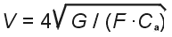
(La fórmula anterior resulta de poner en vez de la presión q
del aire, su valor en función de la densidad y la velocidad del mismo, teniendo en cuenta
la forma de Ca empleada en
Alemania y tomando para densidad básica del aire, junto al suelo, o sea al nivel del mar
y a 15º, el valor 1/8. - N. del T.).
La velocidad de descenso es
igual a la de avance multiplicada por el coeficiente de planeo, tg j
= Cw
/ Ca,
valiendo
W = v
(Cw / Ca)
en donde, poniendo el valor
anterior, resulta:
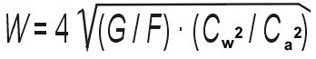
o bien:
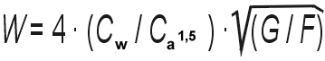
(La inversa de la fracción
Cw / Ca1,5
o sea la fracción Ca1,5
/ Cw se llama « cualidad
sustentadora » del ala, cuyo máximo corresponde al vuelo con el menor gasto posible de
potencia. - N. del T.).
Así se ve que la velocidad de
descenso es tanto menor cuanto mayor es el coeficiente de sustentación con el que se
pueda realizar el vuelo, puesto que esa velocidad es inversamente proporcional a la
potencia 3/2 de Ca. Por otro lado, se ve también que la
velocidad de descenso crece con el valor de Cw pero esta influencia no es tan
grande que pueda modificar sensiblemente el valor de w, por lo que son preferidos los perfiles
curvos y gruesos a los simétricos y delgados, con lo que se verá que esta preferencia ha
influido en gran proporción sobre el progreso de los veleros.
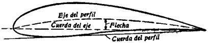
Fig.
13. Líneas de referencia y de dimensión de un perfil
Todavía hay que examinar otras
influencias del perfil sobre la forma de la polar. Se ha visto que el espesor y la
curvatura de un perfil influyen sobre el máximo de la sustentación, ocurriendo lo mismo
en la región de la polar correspondiente a los valores negativos de ese coeficiente, es
decir: cuanto más grueso es un perfil mayor es el máximo negativo de la sustentación y, por el contrario: cuanto mayor es la
curvatura, menor es ese máximo negativo, que en la zona positiva resultaba aumentado.
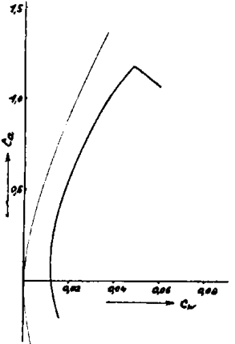 La forma del borde de ataque, o
nariz del perfil, influye de modo esencial sobre la forma de la polar en la proximidad de
los valores máximo y mínimo de la sustentación.
Fig.
14. Dislocación de la corriente aérea en un perfil con borde de ataque agudo
Con
perfiles de curvatura regularmente proporcionada del borde de ataque la corriente aérea
no se disloca poco a poco al acercarse al máximo de la sustentación, con un avance
progresivo del punto en el que empieza a desprenderse de la cara dorsal del ala, sino que
la corriente permanece adherida a la superficie superior, hasta alcanzar el máximo de
sustentación para dislocarse bruscamente en toda la superficie al llegar a un valor
crítico del ángulo de ataque, fenómeno que da lugar a un brusco descenso de la
sustentación y un consiguiente aumento de la resistencia al avance. La polar en este
punto presenta un punto anguloso (fig. 14).
Si ahora se consideran polares de diferentes perfiles, se
observa que los perfiles con borde de ataque agudo o, mejor, los perfiles delgados, que
tienen pequeño el radio de curvatura de su nariz, presentan en mayor o menor proporción
la característica citada de brusco descenso de la sustentación al alcanzarse el máximo
de sustentación. Estos perfiles hay que emplearlos en el vuelo a vela con mucho cuidado,
puesto que en ese caso se vuela siempre cerca del máximo de sustentación, y ocurre que
el fenómeno de la dislocación de la corriente aérea es inestable, es decir: al crecer
el ángulo de ataque permanece la corriente mucho tiempo adherida al ala, para dislocarse
bruscamente, y después, al disminuir ese ángulo, se verifica también, bruscamente, la
adherencia de la corriente al ala, pero con un ángulo de ataque inferior al que, al
crecer, dio lugar a la dislocación de la corriente.
Tales perfiles pueden influir desfavorablemente sobre las
propiedades de la barrena, pues pueden hacer que, al llevar la palanca adelante para
recuperar, haya que esperar mucho tiempo antes de que la corriente se adhiera de nuevo al
ala. Las mismas propiedades presentan los perfiles con borde de ataque agudo y,
naturalmente, también en la zona de sustentación negativa. Ahora estudiaremos la
influencia de la forma del perfil sobre el coeficiente de momentos y sobre la posición
del centro de presiones, empezando por decir que, como ya se ha visto, los perfiles
simétricos tienen fijo el centro de presiones. El grueso del perfil no ejerce influencia
sobre el momento y la posición del centro de presiones, y sólo la forma del eje del
mismo es la que influye sobre esas características, pudiendo decirse que, en general, el
coeficiente de momentos y, de consiguiente, los desplazamientos del centro de presiones
son tanto mayores cuanto mayor es la curvatura del perfil; además, también influye sobre
la magnitud del coeficiente de momentos la posición de la flecha del perfil (fig. 15) y,
precisamente, esa magnitud es tanto mayor, para igual valor de la flecha, cuanto más
cerca esté esa flecha del borde de salida.
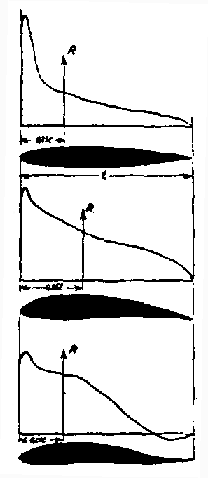
Fig. 15. Posición del centro de presiones en
diferentes perfiles
Arriba: Perfil simétrico. Posición del centro de presiones
en el punto a 25 % de la profundidad del ala. (Centro de presiones fijo.)
Centro: Perfil curvo.
Posición del centro de presiones, aproximadamente
al 36 % de la profundidad del ala. (centro de presiones variable.)
Abajo: Perfil en S. Posición del centro de presiones, aproximadamente al 25 % de la profundidad del
ala. Perfil de Centro de presiones casi fijo.
Especialmente,
la forma del eje del perfil en la zona del borde de salida tiene gran influencia sobre las
propiedades del perfil, en cuanto a los momentos, y conocidos son los perfiles llamados en
S, es decir con la zona posterior curvada hacia arriba, en los que los desplazamientos del
centro de presiones son muy pequeños. Un perfil, aunque tenga curvatura positiva muy
pronunciada, puede hacerse que tenga fijo el centro de presiones, dando a la zona
posterior una curvatura inversa. Este efecto estabilizador de los perfiles con borde de
salida levantado es fácil de explicar si se reflexiona en que la reacción del aire en la
zona posterior es negativa, aunque, naturalmente, sea positiva la resultante total. Se
añadirá aún lo siguiente sobre la posición del centro de presiones: es opinión
corriente entre los alumnos de las escuelas de pilotaje que el centro de presiones está
situado al 33 % de la profundidad del ala, y esto sólo es cierto para un determinado
perfil medio, viéndose en la figura 15 las tres formas características de perfiles, con
la repartición aproximada de presiones, en el caso normal de coeficiente de sustentación
Ca = 1,0 y la posición
que en cada uno de ellos tiene el centro de presiones.
Los perfiles citados como estables tienen, en general, una
curvatura total negativa o bien, teniendo una débil curvatura positiva, terminan con una
fuerte elevación de la zona de salida.
Con lo dicho se considera que se ha expuesto lo más
esencial de las propiedades de los perfiles y de las curvas polares, pero para completar
las ideas se estima necesario decir que las propiedades de los perfiles y de las curvas
polares, pero para completar las
ideas se estima necesario decir que las propiedades del perfil pueden representarse de
otro modo en función 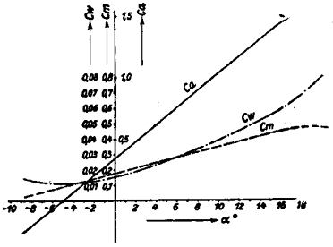 directa
del ángulo de ataque (fig. 16) (Este
diagrama, en el que cada curva representa los valores de un coeficiente en dependencia del
ángulo de ataque, se llama diagrama de « gráficos separados ».- N. del T.).
Fig. 16. Gráficos
de los coeficientes Ca, Cw, y Cm en función del ángulo de ataque
En este diagrama se ve que el curso de las curvas de los
coeficientes de sustentación y de momentos es en gran parte rectilíneo, siendo posible
la determinación directa, por el cálculo, de la región recta, según lo han hecho
Birnbaum y Glauert empleando la teoría de los torbellinos y partiendo de una forma dada
de perfil, como también se puede determinar aproximadamente por el cálculo la curva de
valores de Cw ; lo que no
es posible calcular es las zonas curvas que corresponden a los períodos de dislocación
de la corriente aérea, tanto en la cara superior como en la inferior del perfil.
En la historia de la evolución del vuelo a vela
desempeña importante papel la cuestión de la elección de perfiles apropiados. En primer
lugar, cabe decir que la construcción de veleros de concurso empezó a tomar incremento
notable por el tiempo en que se llevaron a cabo los primeros vuelos de horas de duración
de Martens y Hentzen en el año 1922, y el « Vampyr », que por entonces apareció,
construido por los profesores Madelung y Pröll, fue el primer velero de concurso que dio
ya las directrices para la realización de la mayor parte de los veleros que luego se
construyeron y volaron con gran éxito. Las exigencias que entonces se tenían para las
características, de poder alcanzar la mayor altura de vuelo posible con apoyo orográfico
y la mayor duración posible, estaban condicionadas al empleo de perfiles de ala gruesos y
curvos, que eran los que podían proporcionar la más pequeña velocidad de descenso
posible. Luego vino la evolución del vuelo a vela hacia los vuelos de distancia, lo cual
hizo que los constructores se apartasen de esta finalidad de una extrema pequeñez de la
velocidad de descenso, porque este modo de construir conducía necesariamente a aparatos
que volaban demasiado lentamente.
La técnica moderna del vuelo de distancia indica que con
las circunstancias de tiempo en que normalmente se realizan esos vuelos, con objeto de
alcanzar grandes recorridos en el tiempo de que se puede disponer para llevarlos a cabo,
aprovechando sólo las ascendencias térmicas, los elementos decisivos resultan ser el
coeficiente de planeo y la velocidad de avance del aparato. Atendiendo a esto, era
preciso, entre otras cosas, el empleo de perfiles más delgados y de menor curvatura, y
como estos perfiles tienen, como se ha visto, menor el máximo del coeficiente de
sustentación es preciso admitir mayor velocidad de descenso y entonces estos veleros, en
el caso de débiles ascendencias, resultarán inferiores a los de menor velocidad de
descenso, aunque tengan peor el coeficiente de planeo y sean más lentos. Por lo tanto, el
aparato ideal será el que tenga velocidad de descenso pequeña, pero también buen
coeficiente de planeo y gran velocidad de avance. Los esfuerzos de los constructores
actuales se dirigen hacia la obtención de esas características. Se quiere volar de modo
que en una ascendencia el vuelo sea lento y con pequeña velocidad de descenso; en un aire
neutral, desde el punto de vista de movimientos verticales, se vuele con buen coeficiente
de planeo y, en una descendencia, el vuelo sea con gran velocidad de avance, siendo
todavía admisible la velocidad de descenso y bueno el coeficiente. de planeo.
Estas condiciones han sido estudiadas por Lippisch para
llevarlas a la 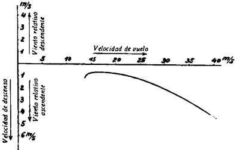 práctica de la
construcción y, a este efecto, las ha representado en la llamada polar de velocidades
(figura 17), que es el medio que, en la actualidad, permite hacer mejor la comparación de
características de veleros.
Fig. 17.
Polar de velocidades
En ese
diagrama se tiene la velocidad de descenso en función de la velocidad de vuelo y, de él,
se puede determinar fácilmente, por el cociente de ambas velocidades, el valor del
coeficiente de planeo. Se ve, pues, que el mejor avión será aquel que, tanto con
pequeña como con grande velocidad de vuelo, tenga menor velocidad de descenso que otro,
es decir, que su curva sea lo más tendida posible. El diagrama permite además determinar
la velocidad de vuelo correspondiente a cada velocidad de ascendencia o descendencia del
aire para obtener el mejor ángulo de planeo respecto al terreno. La región de las
velocidades, en las cuales el velero tenga buena velocidad de descenso, se llama
abreviadamente intervalo de velocidad y, por tanto, puede decirse que un avión tiene
características tanto mejores cuanto mayor sea su intervalo de velocidad.
Con lo explicado se ha esclarecido, en sus grandes rasgos,
la influencia del perfil de ala sobre las características de un velero. Naturalmente,
también hay que atender en la evolución del velero a la influencia del fuselaje y de los
órganos de mando, y a este respecto los antiguos veleros, generalmente con fuselaje de
sección poligonal y que tenían especiales ventajas, en cuanto a construcción, eran
inferiores a los veleros con fuselaje de formas redondeadas u ovoides. Claro es que no hay
que decir que la reducción de la sección transversal del fuselaje habría de influir
sobre las condiciones de comodidad del piloto. Se vio pronto que era preciso estudiar la
influencia sobre la resistencia al avance de todos los elementos del avión que resultaban
expuestos a la corriente de aire, y así se dedicó especial atención a la forma
aerodinámica del empalme de los órganos de mando con el fuselaje; igualmente los
empalmes de los montantes y riostras al ala y al fuselaje, de lo que no se puede
prescindir por razones de resistencia, se hicieron también con revestidos aerodinámicos.
La unión de las alas al fuselaje merece especial atención, y en este aspecto se debe
decir que los tipos de monoplano de ala alta y ala baja que primitivamente se usaron han
sido sustituidos en la actualidad por el monoplano de ala media, en el que, saliendo las
alas normalmente de los costados del fuselaje, se presta a conseguir un empalme
aerodinámico de resistencia perjudicial mucho menor.
Además de las formas aerodinámicas, desempeña
importante papel en la cuestión de características de un velero el peso que resulta,
según la clase de construcción empleada. De la fórmula que se ha dado a conocer para el
valor de la velocidad de descenso se deduce que esa velocidad disminuye con la raíz
cuadrada de la carga por unidad superficial, es decir con el peso en vuelo. Hemos visto
que se pueden mejorar las características de un velero mejorando el alargamiento, o sea
aumentando la envergadura y eligiendo un perfil de poco espesor. Pero es claro que
empleando estos recursos, si se quiere mantener la resistencia en un grado conveniente,
hay que aumentar el peso de la construcción; mas conviene observar que como actualmente
para juzgar de las características de un velero la cuestión decisiva no es ya sólo la
menor velocidad de descenso posible, queda, para el constructor, una posibilidad de
encontrar el equilibrio óptimo entre las buenas condiciones aerodinámicas y un peso
aceptable de construcción.
La exigencia de reducir lo más posible la resistencia perjudicial ha conducido a
construir aviones de los llamados sin cola, en los cuales se ha hecho mucho menor la
resistencia de fuselaje y órganos de mando, habiéndose llegado por este camino hasta
poner el piloto en el ala misma y construir el tipo de ala voladora. Sin embargo, tales
construcciones han presentado hasta aquí en sus propiedades de vuelo dificultades
importantes, que no han podido superarse prácticamente para obtener buenas
características de vuelo. En todo caso, este género de aparatos ofrece perspectivas a
los constructores para poder conseguir éxitos de resonancia.
|